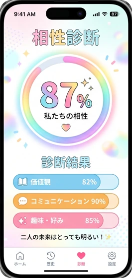
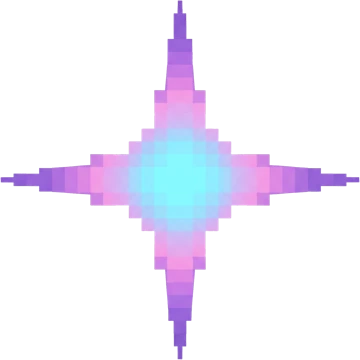
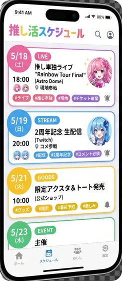
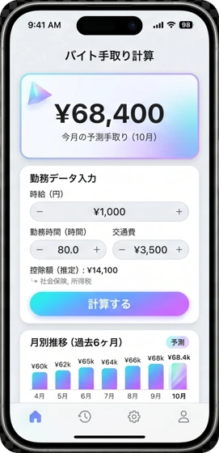
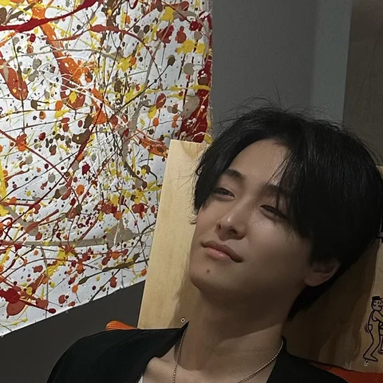

例 01
友だちとの相性診断
質問も、結果の出し方も自分で決める。作ったらLINEで送って、その場で盛り上がる。

HIROSHIMA AI LAB VOL.01 — 2026広島の大学生の、作る遊び場。
何もない場所から、
“作れる側” になる。
広島の大学生のための、
AIでアプリを作るコミュニティです。
参加無料月1回・約3時間初心者OK・コードは書かない広島の大学生なら誰でも
広島の大学生が、もう動き出している。
コードは書きません。日本語でAIに話しかけるだけ。広島の大学生のための、小さな部活のような場所です。
つくるのは、誰かに売るサービスじゃなくて、自分がほしいもの。

質問も、結果の出し方も自分で決める。作ったらLINEで送って、その場で盛り上がる。

ライブ・配信・グッズ発売を1画面に。通知のタイミングも、自分仕様で。

時給×時間を自動で集計。給料日の前に、手取りが先に見える。
むずかしさは、スマホで地図アプリを使うのと、だいたい同じくらいです。
月1回、広島市内に集合。来られない日はオンラインでOK。所要：だいたい3時間
その日に作りたいものを決めて、AIと一緒に形にする。コードの経験：いりません
最後に、作ったものを順番に見せ合う。完成しなくても大丈夫
かかりません。参加は無料です。これからも、ずっと無料でやるつもりです。
まったく問題ありません。日本語でAIに話しかけるだけで、アプリが作れます。
完成しなくても、まったく問題ありません。「ここまで作った」を見せるだけで十分です。
第1回は6月後半に開催予定。広島の大学生なら、誰でも。参加は無料です。
まずはLINEで「気になる」とだけ送ってください。
向いていないかも：「作りたいものが決まっていて、すぐ誰かに外注したい」人には、たぶん物足りないです。ここは、自分の手で“作れる側”になりたい人のための場所。

主催：鴨川 虹輝かもがわ こうき 大学4年生。2年間の休学中に、1年目はアパレル、2年目はAI導入支援（DX）の事業を経験。東京から、事業の立ち上げメンバーとして1年間のインターンで広島へ。「広島の学生こそ、AIで一番おもしろいことができる」——そう思って、この場をはじめました。